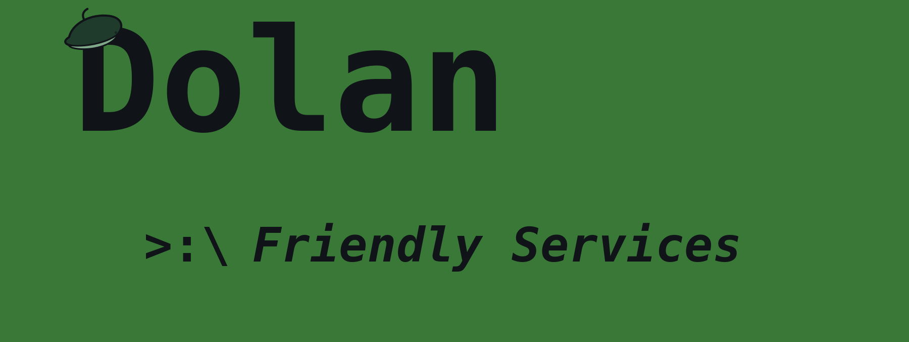
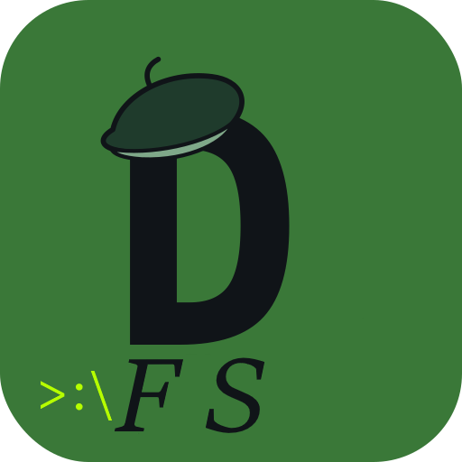

ChatGPT Usage Tracker
A simple manual tracker for ChatGPT messages, image uploads, file uploads, and estimated storage. It runs in your browser and keeps data local.


Friendly, simple tech resources for people who don’t want jargon, ads, subscriptions, or confusing nonsense.
A simple manual tracker for ChatGPT messages, image uploads, file uploads, and estimated storage. It runs in your browser and keeps data local.
A calm, plain-English guide for using Microsoft Quick Assist safely during remote tech support. Made for older folks, family helpers, and anyone who wants clear steps.
Plain-English help by remote session using Microsoft Quick Assist. Available for Windows 10 and Windows 11 only.
Simple help with Windows, phones, email, printing, basic troubleshooting, file sharing, and plain-English setup steps.
Clear price agreed before work starts. No surprise charges.
Prices are a simple guide only. I’ll confirm the cost before starting any paid work, and I’ll be upfront if a job is outside what I can reasonably help with.
Best for small, friendly jobs where clear steps matter more than tech jargon.